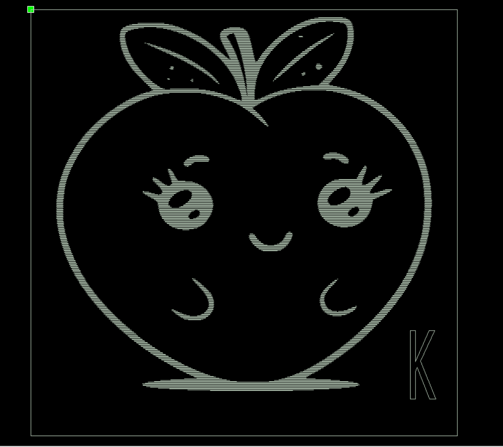
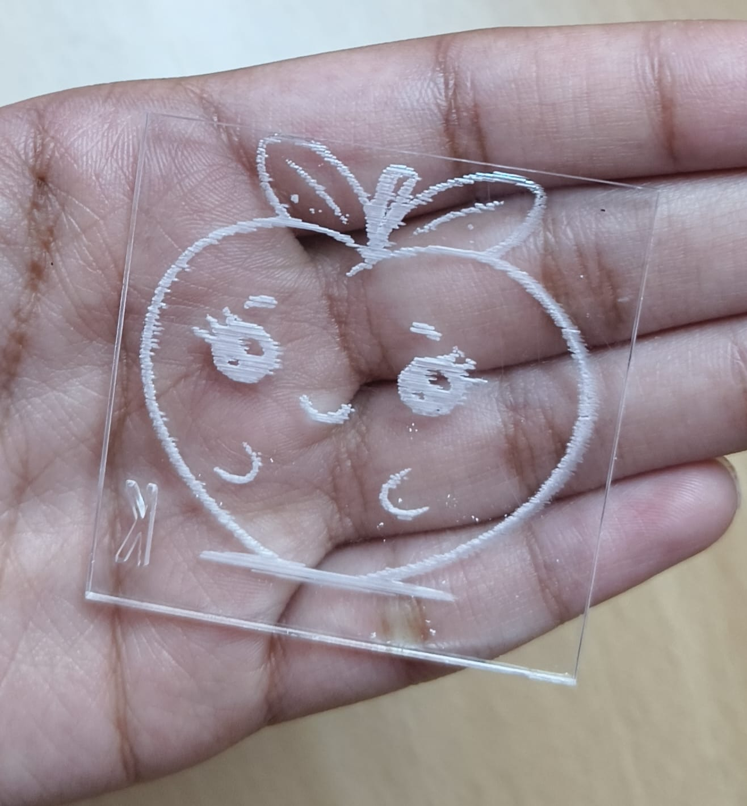
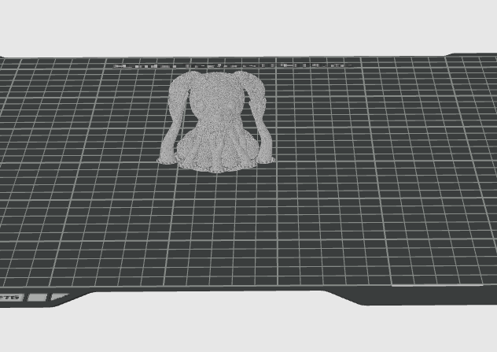
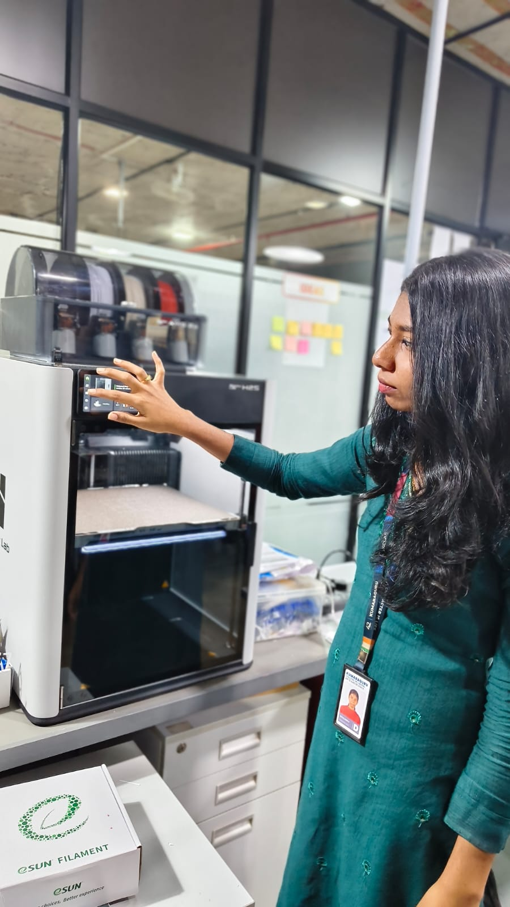
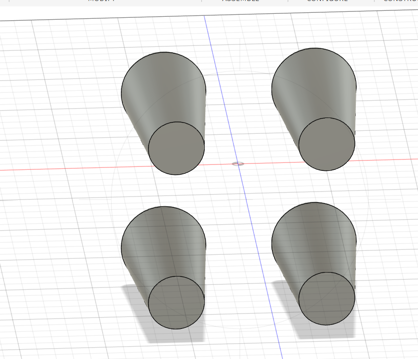
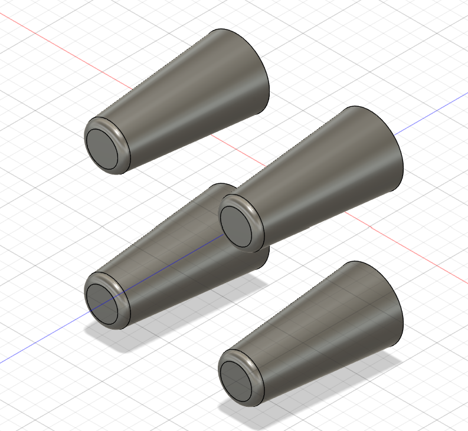
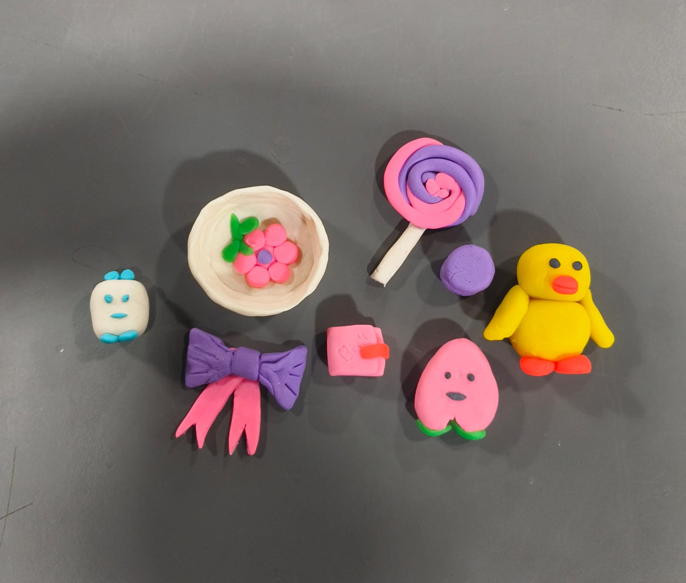

Digital Fabrication & Prototyping
Exploring the fascinating world of Additive Manufacturing and Laser Cutting.


Laser Cutting
Custom Keychain Design
As part of an individual hands-on activity, I designed and created a custom keychain using laser-cutting technology. I used RDWorks V8 to develop the artwork and configure it for laser cutting.
The digital design was then transferred to the machine to produce the physical keychain, providing exposure to how computer-generated designs transform into tangible products.
Key Skills Gained
- Basic design creation using RDWorks V8.
- Understanding the laser-cutting workflow.
- Preparing digital files for machine execution.
- Converting a digital design into a physical product.
- Developing creativity and precision.



3D Printing
Design and Fabrication
I explored the fascinating process of 3D printing by preparing a digital model and transforming it into a physical object. Using Bambu Studio, I imported and positioned the 3D model (a dog), configured printing parameters, and generated the sliced file.
This activity provided hands-on workflow experience, teaching me how objects are created layer by layer and applying 3D printing in product prototyping.
Key Skills Gained
- Basic operation of Bambu Studio.
- 3D model preparation and positioning.
- Understanding slicing and layer-by-layer printing.
- Familiarity with 3D printing parameters.
Autodesk Fusion 360
Fusion 360 is a 3D CAD software used to create, modify, assemble, and visualize 3D models. In these two design exercises, I learned how to create basic shapes and efficiently generate multiples using Mirror and Pattern operations.
What I Gained Overall
- 3D Modelling: Learned how a 2D sketch can be developed into a 3D solid.
- Symmetry: The Mirror operation taught me how symmetrical components can be created efficiently.
- Repetition: The Pattern operation taught me how one model can be repeated to produce multiple identical instances.
- Accuracy & Time Efficiency: Using Mirror and Pattern ensures that duplicated geometry maintains consistency instead of relying on manually drawing each object, saving immense time.

Upload fusion-design1.png to GitHub!Design 1 – Using Mirror
The first design consists of four similar tapered cylindrical shapes arranged symmetrically in a square-like arrangement.
Shape Features:
- Circular base and face
- Tapered cylindrical/conical body
- Wider rounded upper portion
- Smooth curved transitions

Upload fusion-design2.png to GitHub!Design 2 – Using Pattern
The second design contains multiple copies of the same tapered cylindrical object, maintaining identical orientation.
Shape Features:
- Long tapered cylindrical body
- Circular end with slightly wider rim
- Smooth curved surfaces
- Consistent geometry across instances
Clay Modelling for Marketing

Image not foundThis hands-on clay modelling activity was designed to explore creativity and the intersection of visual design with marketing strategy.
1. Creativity and Design
Clay modelling helped me develop creativity and design skills by creating colourful objects such as a lollipop, duck, bow, and small characters using different shapes and colours.
2. Marketing and Visual Appeal
The use of bright colours, attractive shapes, and playful characters helps grab customers' attention. It shows how visual design can create interest and make a product memorable.
3. Product Prototyping
Clay models can be used as simple prototypes before developing a final product. Designers can test the shape, colour, size, and appearance and make improvements based on feedback.
What I Gained
I gained knowledge of creative thinking, colour selection, product design, visual communication, and prototyping. This activity helped me understand how attractive design can intimately support marketing and customer engagement.